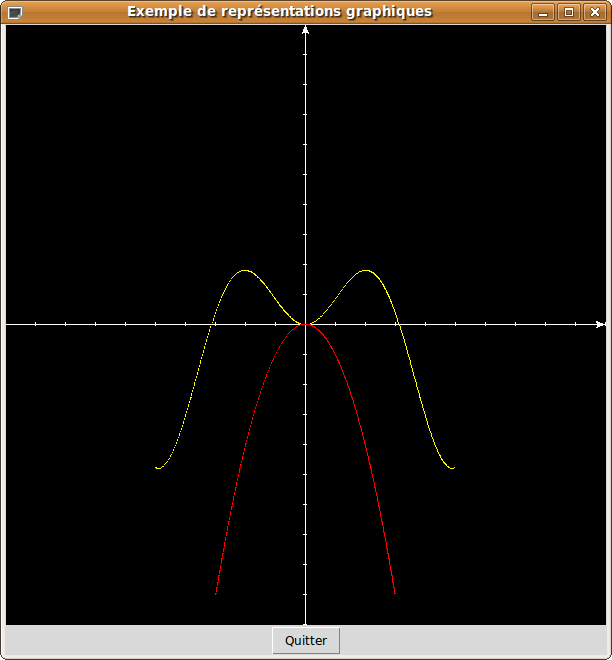
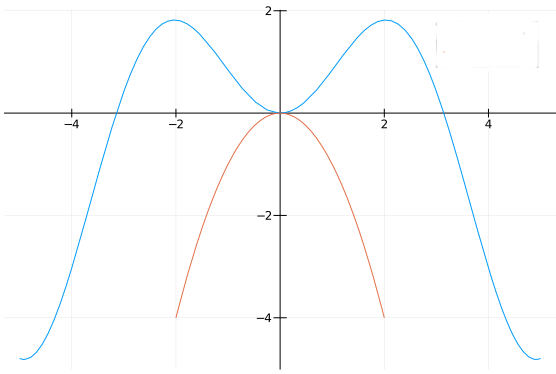
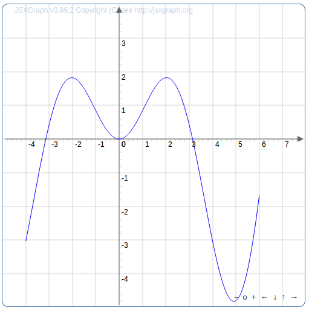

| Choisissez votre langue ! | Choose your language ! |
Domaine de définition
Domain
Qui dit application dit triplet:
- Ensemble source E
- Ensemble but F
- 'fonctionnel' G ⊆ E×F Dans le cas des fonctions dites ' numériques ' nous exigeons seulement que l'ensemble source soit une partie de ℝ et que l'ensemble but soit ℝ .
Cet ensemble source nous le notons Df et nous l'appelons le 'domaine de définition' de f.
y=f(x) ⇔ (x,y)∈Gf⊆ℝ×ℝ où Gf est le graphe de f.
Donc en théorie toute fonction numérique f devrait être définie (donnée) par son graphe. De fait, nous allons voir qu'en pratique il n'en est rien.
Dans la pratique Df est souvent un intervalle (fini ou infini) ou bien une réunion d'un nombre fini d'intervalles.
Who says mapping says triplet:
- Set of departure E (or domain)
- Set of destination F o(r codomain)
- functional' ' G ⊆ E×F In the case of what we call here ' numeric ' (or ' numerical ') functions we only require that the domain be a part of ℝ and the codomain is ℝ .
We denote this set of departure Df and call it the 'domain of definition' of f.
y=f(x) ⇔ (x,y)∈Gf⊆ℝ×ℝ where Gf is the graph of f.
So in theory any numerical function f should be defined (given) by its graph. In fact, we will see that in practice this is not the case.
In practice Df is often an interval (finite or infinite) or a union of a finite number of intervals.
Fonctions définies par une formule
Très souvent une fonction numérique sera donnée (de façon non orthodoxe) par une expression littérale (formule), du genre: f(x)=2x/sin(x).On pourra vous demander "Quel est le domaine de définition de f ?", ce qui du point de vue purement logique est une absurdité.
La question correcte à poser est "Pour quelle valeur de la variable x l'expression f(x) est-elle calculable?".
Ce point étant établi, si Df désigne l'ensemble de ces valeurs, la formule y=f(x) définit bien une application fonction numérique ayant Df pour domaine de définition.
Ainsi, pour notre exemple, pour que le quotient soit défini il faut que sin(x)≠0 donc que x≠kπ pour k∈ℤ.
Voici un programme Python qui dresse un tableau de valeurs pour une fonction mathématique usuelle donnée par une formule:
Functions defined by a formula
Very often a numeric function will be given (in an unorthodox way) by a literal expression (formula), like: f(x)=2x/sin(x).You may be asked "What is the domain of definition of f ?", which from a purely logical point of view is nonsense.
The correct question to ask is "For which values of the variable x the expression f(x) is computable (has meaning) ?". Abswering this question suppose that you know a few rules about real numbers calculations such as you cannot divide by 0, you cannot take the root of a strictly negative number ans so on...
This point having been established, if Df denotes the set of these values, the formula y=f(x) defines a numeric function having Df as domain of definition.
Thus, for our example, for the quotient to be defined, sin(x)≠0 must therefore be x≠kπ for k∈ℤ.
Here is a Python program that draws up an array of values for a common mathematical function given by a formula:
Et voici l'équivalent avec Julia 1.6.
And here is the equivalent with Julia 1.6.
Fonctions définies par une étude de cas
L'exemple type de cette situation est la fonction 'valeur absolue' :\( \displaystyle f(x)=\left\{\begin{matrix} x ~~~si~x\geqslant 0 \\-x~~~ sinon \end{matrix}\right. \)
Mais il en existe bien d'autres comme les fonctions dites 'affines par morceaux' assujetties à passer par un certain nombre de points et à être représentées par des fonctions affines entre deux valeurs consécutives du tableau:Exemple:
On veut que f(0)=1 f(1)=3 f(2)=-2
Donc pour x ∈[0,1] on aura f(x)=ax+b avec:
b=1
a×1+b=3
d'où a=2
Et pour x ∈[0,1] on aura f(x)=ax+b avec:
a+b=3
2a+b=-2
d'où:
a=-5 et b=8
En définitive:
\( \displaystyle f(x)=\left\{\begin{matrix} 2x+1 ~~~si ~~x\in [0,1] \\-5x+8~~~si~~x\in [1,2] \end{matrix}\right. \)
Autres définitions possibles
La fonction 'partie entière' relève d'un autre type de définition.E(x) est défini comme: "Le plus grand entier n∈ℤ tel que n≤x."
Nous voyons donc que bien que les formules soient le plus souvent employées pour définir des fonctions numériques, il existe bien d'autres méthodes pour les définir.
Représentations graphiques
L'univers Python
Voici un premier programme Python minimal utilisant le module graphique tkinter pour tracer la représentation graphique d'une fonction dans un repère orthonormé dont l'origine est au centre de la fenêtre. Il est utilisable en l'état, il suffit de changer les paramètres concernant la taille de la fenêtre, la taille du vecteur unitaire, les fonctions à représenter et la fonction principale.Functions defined by a case selection
The typical example of this situation is the 'absolute value' function :\( \displaystyle f(x)=\left\{\begin{matrix} x ~~~if~x\geqslant 0 \\-x~~~ else \end{matrix}\right. \)
But there are many others such as the so-called 'piecewise affine' functions with graph subject to pass through a certain number of points and being represented by affine functions between two consecutive values of the array:Example:
We want f(0)=1 f(1)=3 f(2)=-2
So for x ∈[0,1] we will have f(x)=ax+b with:
b=1
a×1+b=3
hence a=2
And for x ∈[0,1] we will have f(x)=ax+b with:
a+b=3
2a+b=-2
from where:
a=-5 and b=8
Ultimately:
\( \displaystyle f(x)=\left\{\begin{matrix} 2x+1 ~~~if ~~x\in [0,1] \\-5x+8~~~if~~x\in [1,2] \end{matrix}\right. \)
Other possible definitions
The function 'integral part' is a different type of definition.E(x) is defined as: "The largest integer n∈ℤ such that n≤x."
So we see that although formulas are most often used to define numerical functions, there are many other ways to define them.
Graphical representations
The world of Python
Here is a first minimal Python program using the tkinter graphics module to draw the graphical representation of a function in an orthonormal system of axes with origin at the center of the window. It can be used as it is, all you have to do is change the parameters concerning the size of the window, the size of the unit vector, the functions to be represented and the main function.
Et voici le résultat de l'exécution :
And here is the result of execution :

L'univers Julia
Le package 'Plots' permet de résoudre à peu près tous les problèmes de représentation graphique.
Exemple de programme :
The world of Julia
The 'Plots' package solves almost all graphical representation problems.
Example program:
Et voici le résultat :
And here is the result :

L'univers Javascript
Voici un autre programme utilisant le langage Javascript et la librairie jsxgraph, ce fichier est nommé 'plotsin.js':The world of Javascript
Here is another program using the Javascript language and the jsxgraph library, this file is named 'plotsin.js':
Voici ci-dessous le code html d'une page web appelant ce programme.
Here under is the html code of a web page calling this program.
Et voici le résultat :
And here is the result

Remarque importante:
Les exemples ci-dessus et les souvenirs qu'on peut avoir de l'enseignement secondaire, laissent à penser que la représentation graphique d'une fonction numérique correspond à l'idée que nous avons d'une courbe 'continue'. Ceci n'est pas vrai en toute généralité.Considérons la fonction ainsi définie par cas:
\( \displaystyle f(x)= \left\{\begin{matrix} 1 ~~~si~~x\in \mathbb{Q} \\ 0 ~~~si~~x\notin \mathbb{Q} \end{matrix}\right. \)
Autrement dit cette fonction est la de l'ensemble &rationals.Essayons d'imaginer ce qu'est la représentation graphique de cette fonction:
Elle se présente comme la réunion de
- un ensemble dénombrable de points placés sur la droite horizontale d'équation y=1
- un ensemble non dénombrable de points sur l'axe des abscisses
Prolongements et restrictions
Tout ce que nous avons dit précédemment sur les restrictions et les prolongements (voir ), s'applique aussi aux fonctions numériques.Important note:
The examples above and the memories we may have of secondary education, suggest that the graphical representation of a numerical function corresponds to the idea that we have of a 'continuous' curve. This is not true in general.Consider the function thus defined by cases:
\( \displaystyle f(x)= \left\{\begin{matrix} 1 ~~~if~~x\in \mathbb{Q} \\ 0 ~~~if~~x\notin \mathbb{Q} \end{matrix}\right. \)
In other words, this function is the of the set ℚ.Let's try to imagine what the graphical representation of this function could be :
It is actually the union of
- a countable set of points placed on the horizontal line with equation y=1
- an uncountable set of points on the x-axis
Extensions and restrictions
Everything we said before about restrictions and extensions (see ), also applies to numeric functions.- Df ⊆Dg
- f(x)=g(x) ∀x∈Df
- Df ⊆Dg
- f(x)=g(x) ∀x∈Df
Et de la même façon on dit que:
And in the same way we say that:
Par ailleurs le cas où le graphe de f est un ensemble fini de points (résultats de mesure). On cherche souvent, parmi tous les prolongements de f, le 'meilleur candidat' du point de vue de certains critères. C'est ce qu'on appelle un problème d'interpolation .
Moreover the case where the graph of f is a finite set of points (results of measurements). One often seeks, among all the extensions of f, the 'best candidate' from the point of view of certain criteria. This is called an interpolation problem.
|
Création Gilles Dubois
Created by Gilles Dubois
|
Janvier 2022
January 2022
|
Version mobile Jquery
Mobile Jquery version
|
|